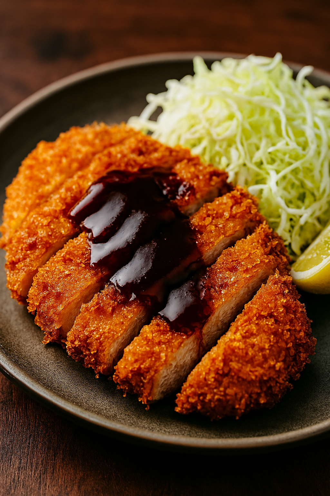

Tonkatsu

Here’s a classic and crispy Tonkatsu (Japanese Pork Cutlet) recipe that’s easy to master and restaurant-worthy. Perfect for pairing with shredded cabbage, rice, and a drizzle of tonkatsu sauce.
Ingredients:
- 4 boneless pork loin chops (about ½ inch thick)
- Salt and pepper to taste
- ½ cup all-purpose flour
- 2 eggs, beaten
- 1½ cups panko breadcrumbs
- Oil for deep frying
- Shredded cabbage (for serving)
- Tonkatsu sauce (store-bought or homemade)
Optional Homemade Sauce:
- 2 tbsp ketchup
- 2 tbsp Worcestershire sauce
- 1 tbsp oyster sauce
- 2 tsp sugar
Instructions:
- Prep the pork: Trim excess fat and make small slits along the edge to prevent curling. Season with salt and pepper.
- Dredge: Coat each pork chop in flour, dip in beaten egg, then press into panko until fully coated.
- Fry: Heat oil to 170–180°C (340–355°F). Fry pork until golden brown and crispy, about 1½–2 minutes per side. Drain on paper towels.
- Serve: Slice into strips and plate with shredded cabbage and tonkatsu sauce.
- Drizzle over pork and serve with steamed rice or mantou buns.